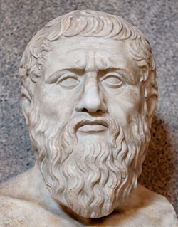
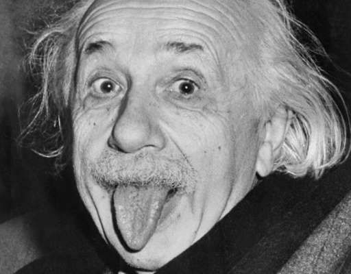
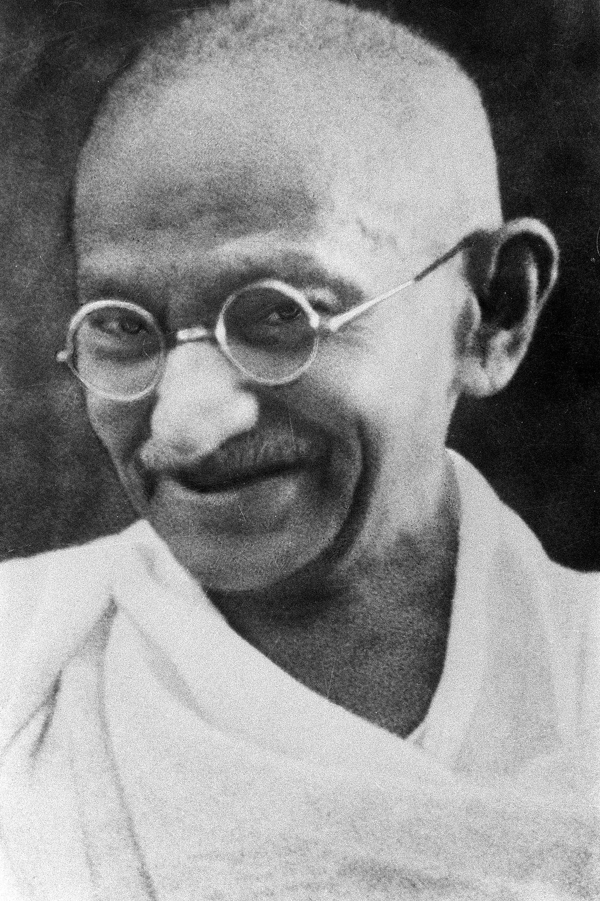

Sou a Francisca, tenho 18 anos e frequento o curso de Ciências da Comunicação: Jornalismo, Assessoria, Multimédia, na Faculdade de Letras da Universidade do Porto. Este é o meu site, bem-vindo!
É Possível Mudar O Mundo
Início
Conteúdos
Multimédia
PESSOAS QUE MUDARAM O MUNDO
(Para saber mais sobre cada um carregue nas fotografias)
Nelson Mandela
Dalai Lama
Isaac Newton
Platão

Albert Einstein

Rosa Parks
Leonardo Da Vinci
Mahatma Gandhi
